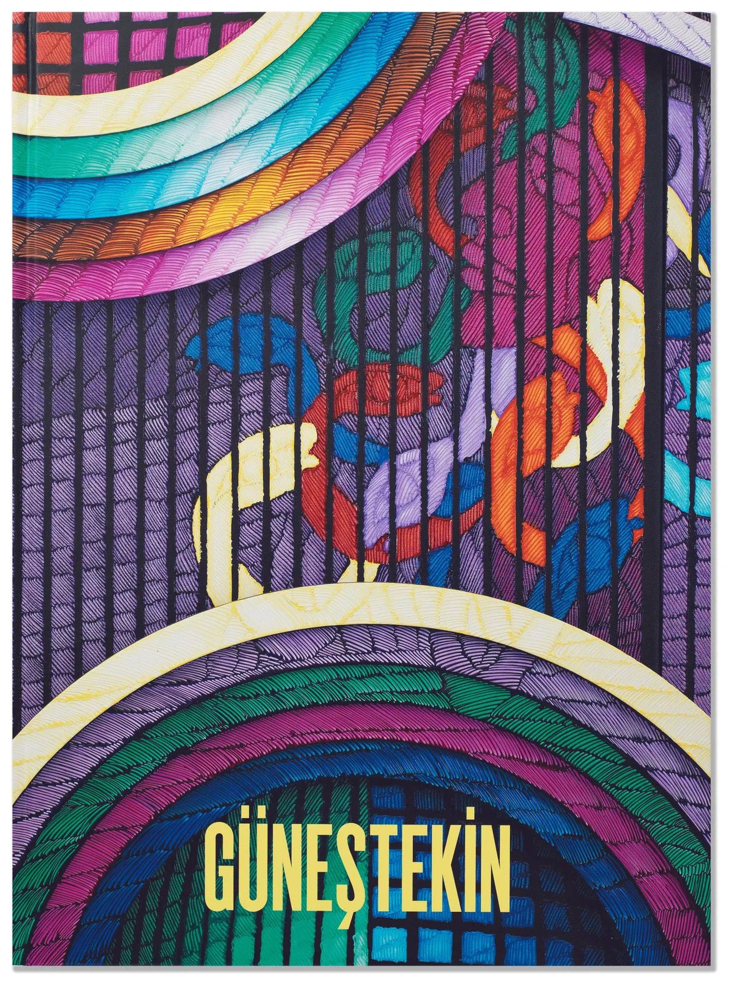

<!doctype html><html lang="tr"><meta charset="utf-8"><meta name="viewport" content="width=device-width,initial-scale=1"><title>PUBLICATIONS | PILEVNELI</title><style>body{margin:0;background:#f6f5f1;color:#1d2327;font:16px/1.6 system-ui,sans-serif}main{max-width:1100px;margin:auto;padding:36px 28px}a{color:#244e8b}h1{font-size:32px;line-height:1.25}img{max-width:100%;height:auto}nav,.notice{padding:14px 20px;background:white;border:1px solid #ddd;border-radius:8px;margin:0 0 24px}nav{display:flex;gap:24px;flex-wrap:wrap}.records_list ul{list-style:none;padding:0;display:grid;grid-template-columns:repeat(auto-fit,minmax(260px,1fr));gap:24px}.records_list li{background:white;padding:16px}.image img{max-height:600px;object-fit:contain}.clear{clear:both}button,input,select{font:inherit;padding:9px 14px;border:1px solid #bbb;border-radius:6px}button{cursor:pointer;background:white}small{color:#667}table{width:100%;border-collapse:collapse}td,th{text-align:left;padding:10px;border-bottom:1px solid #ddd}.tag{font-size:12px;border-radius:5px;padding:3px 8px;background:#e5ebe5}pre{white-space:pre-wrap}</style><main><nav><a href="../arsiv.html">← Arşiv dizini</a><a href="https://web.archive.org/web/20210420160758/https://www.pilevneli.com/project/publications/">Wayback kopyası</a><a href="../texts/7a721382afc96388.txt">Düz metin</a></nav><h1>PUBLICATIONS | PILEVNELI</h1><div class="clearwithin" data-ct-name="pages" data-ct-type="record" data-ct-value="30" id="content">
<div class="clearwithin full_width" id="content_module">
</div>
<div class="feature_panels feature_panels_layout_standard">
<div class="feature_panels_inner clearwithin">
<ul>
<li class="panel panel_type_7 feature_variant_1 panel_id_5 panel_number_1 panel_image_grid panel_style_standard panel_variant_standard fp_unnamed">
<div class="records_list grid_dynamic_layout_feature_panels collapse_single_column image_list">
<ul>
<li class="item_content_section_publications">
<a href="2a82a42c0878a133.html">
<span class="image"><span>

</span></span>
<div class="content">
<span class="section hidden">Publications</span>
<h2 class="fp_title" data-fieldname="title">UNPROMISED LANDS</h2>
<span class="subtitle" data-fieldname="subtitle">KEZBAN ARCA BATIBEKİ</span>
<span class="description" data-fieldname="description">Language: English &amp; Turkish                          </span>
</div>
</a>
</li>
<li class="item_content_section_publications">
<a href="965438ccf0c2adbb.html">
<span class="image"><span>

</span></span>
<div class="content">
<span class="section hidden">Publications</span>
<h2 class="fp_title" data-fieldname="title">MEMORY CHAMBER</h2>
<span class="subtitle" data-fieldname="subtitle">AHMET GÜNEŞTEKİN</span>
<span class="description" data-fieldname="description">This catalogue is published on the occasion of the exhibition Memory Chamber held by PILEVNELI Project between December 6 2019 - January 26, 2020.</span>
</div>
</a>
</li>
</ul>
</div>
</li>
</ul>
</div>
</div>
</div></main></html>